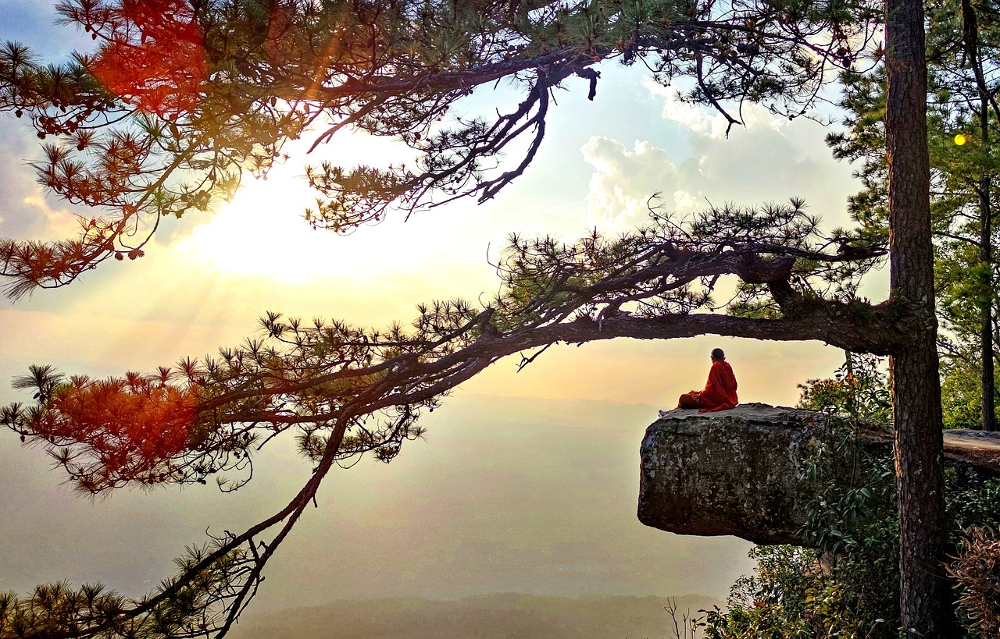

什麼是緣起法的空性見？
文章摘自：海濤法師_高雄旗津天聖宮_緣起法
什麼是緣起法的空性見？海濤法師開示：這個世間種種的不圓滿……，佛教最重要的觀念叫做空性。這個空性不是什麼都沒有，空性所講的真實的意義是萬法皆相互依存，每一個存在都依靠其他的存在而存在。所以這個世間沒有一個單獨的存在，所以一切存在都互相影響，也因為如此叫做諸行無常。所以，風，各位你要去觀察，風會變化、太陽會變化、天氣會變化，就像我們的肉體本來就會變化，所以這個是很正常。
但是雖然一切變化，所以一切的組合也都是暫時的組合，叫因緣和合。所以我們能夠存在在這個世間做一點好事，就要靠著大眾的功德。所以別人的幫助，今天有人幫我們搭帳棚、放椅子、准備法會、載魚來、載雞來，所以我們才可以成就功德。你寫了牌位光靠你一個人回向，不夠！所以佛說要眾生的力量，特別是發菩提心的菩薩力量最大。我們今天有一千個人，一起地幫往生者回向、幫生病者回向，所以這樣能夠成就種種的功德。所以了解如此，我們對一切相互依存的從內心裡面去感恩，所以學佛最重要的是知恩、報恩。但是如果一個人不懂得報恩，他就會抱怨，打電話跟誰說，那個人不好，如何不好，這已經不了解空性了，甚至不是佛教徒了。
因為按照佛陀的教育你對誰都要感恩，順緣、逆增上緣，你不能去挑剔他的缺點。但是世間本來就有缺點，但是缺點你要以慈悲心來跟對方講，就像父母跟孩子說、就像老師跟學生說、就像師父跟徒弟說，你這樣子做會有什麼不好。這不是講對方缺點，這是希望對方改好，跟他說哪裡不對，跟他說如何做才是對，你修行的方法哪裡有問題，你的心態有問題。 所以各位，很重要！一個人如果沒有老師或是沒有辦法接受別人的勸化，這個人就沒有機會進步了，因為他有一個我執，我覺得我這樣是對，這個就不是空性了。
所以希望各位，社會是變化無常的，愛得要死、又怨恨得要死；健康，馬上就生病。所以我們是要如何去面對這個？所以你要有一個空性，這個都是因緣和合，沒有一個永恆不變的，也沒有一個我在受苦，也沒有一個你在欺負我，所以這個叫隨緣自在。所以隨緣不變，不變隨緣，不變的是因為我們有智慧。所以也不好不壞，沒快樂、沒痛苦，不生不死、沒有干淨、坑髒、不善、不惡。因為對你來講，萬法平等。雖然講萬法平等，但是又不離開緣起，我們要斷惡修善。
所以做好事情也不執著，被欺負也知道是空性。但是不是說空性我們就可以欺負別人，因為你欺負別人以後也是欺負自己的業報，只要你生命有存在的一天，你所做的善惡業都會回向你自己。善有善報，惡有惡報。你如果想要證阿羅漢，所以你絕對不敢造惡業，然後要消滅貪、嗔、癡，這樣你的生命就不見了，進入永寂。就消失了、沒有痛苦了、入涅槃了、解脫了，但是這個不是佛的目的。佛的目的是，一直要在輪回裡面幫助眾生。所以除了要沒有缺點更要具足優點。你今天富有，我們今天放八台魚車，來！師父，幫我叫十八台來，再多湊十台。大家為你鼓掌！福報大！功德大！為什麼？你有錢！錢從哪裡來？福報來的！父母留給你自己努力賺來的，你有福報，所以你都可以做大功德，做大功德這個力量就可以消重業，也可以回向眾生，很簡單的道理。
所以，雖然講空性，但是我們還要積極努力。所以學佛很簡單，來，念一下：願斷一切惡，願修一切善，誓度一切眾生。諸惡莫作，眾善奉行。自淨其意，是諸佛教。諸法因緣生，諸法因緣滅。我佛大沙門，常作如是說。所以，佛跟我們講的就是這個。因緣和合、萬法皆空。所以這樣，既然你存在萬法，這個相對的，所以你就要諸惡莫作，眾善奉行。但是眾生無明一直在輪回生死，所以要誓度一切眾生，所以我們在放生、我們在施食，我們不斷回向。所以各位多幫助、多幫助，幫助老人、幫助窮人、幫助不懂佛法的人、幫助流浪狗、幫助豬，只要所有眾生，都是我們要幫助的對象。
學習、努力是為了幫助而不是為了自私。所以你要跟你兒子講：兒子，努力讀書，這樣才可以幫助更多人。而不是努力讀書不然你以後沒飯吃。你給他一個錯誤的思想，自私、自私，考第一名！如果你兒子問你：要考第一名、考第一名要做什麼？有面子！代表我們很聰明！如果你是為這樣而讀書的，下輩子換你都最後一名，你怎麼讀也最後一名，因為你一個自私心去想要贏過別人，反作用力，永遠輸人家。所以各位，你這一輩子比較笨，是因為你過去太聰明、耍聰明；你這輩子比較丑，因為你上輩子太漂亮在那邊耍漂亮；所以你這輩子比較窮，因為你過去太有錢，但是卻在顯示有錢又悭貪，所以你就會覺得很自卑。
有的人窮得很快樂，因為他沒有這個業，有些人窮得很痛苦。窮得很快樂是他不是因為業報，這是他自然的因緣。他認為有錢，人家放十部車，然後我也要放，沒錢，人家放車，我幫他來倒魚。我現在問各位：來倒魚曬太陽的功德大還是出錢的功德大？曬太陽大了！但是又出錢又曬太陽那更大了！出錢還不簡單，有錢人支票開一開就走了，我們在那裡曬得要死，倒魚還怕跌倒。所以我想，當然！出錢的人又有一個正確的動機，也在努力，當然不一樣了。所以我想，盡力而為。 所以各位一定要永遠永遠不離開一個思想--空性，卻不離世間緣起。
所以世間什麼事情你要把它辦好，辦得很圓滿、圓融、有能力，代表相對的緣起你有在善用它。桌子怎麼擺？椅子怎麼擺？事情怎麼做？所以這個要會，但是你做卻不執著。不然很多媽媽，很多做女人的，很聰明、很聰明、很厲害，顧老公、顧孩子、顧家，但要是發脾氣，這下再見。你雖然有能力，但是沒空性，沒用，執著啊！所以有些人不用、不用那麼拼，隨便、隨便，賺那麼多要做什麼？好像有一點空性，但是很散漫。以後做大熊每天睡，因為他沒智慧，不想動。最會動的是猴子，最不會動的是那些大熊，業報不一樣。
但是各位你要成為一個有能力能夠服務眾生，有智慧，你什麼都要會。所以希望各位以後你要想，法會要如何辦？我也如何辦？牌位要怎麼寫？寫好看一點！擺飾怎麼做？什麼時間做什麼事情？我剛才在想什麼？以後如果這塊庭院給我們不知有多好！我們就蓋個永遠的就好了。沒法師也沒關系，一來就在那裡點燈、繞塔、召請、藥供，自然會有人拿魚來給你放，因為他們要賺錢。就像泰國，你到泰國寺廟就會發現這種狀況，信徒很多，每個人都忙著貼金、拜香，對不對？浴佛、放生，它成為一種文化了，社會風氣了，就像古代的廟都很熱鬧一樣。所以，你不可能永遠依靠法師，所以每個人都來做功德，所以你有一個場地，什麼樣的功德都有。而且讓人寫牌位，免費的，消災、拔度、點燈都免費，旁邊放一個隨喜功德箱就好了，人家自然會放。
各位如果你去歐洲國家，他們都如此。那邊有一個點燈，這個五元，那個一元，它都幫你寫好了，你就自己投錢。就像各位我看他們那些藥，寫一個功德箱，這也是個方法。不過上面應該再寫兩個字：施藥功德箱。這有專款專用，對不對？這個錢要拿去買藥，多少都沒關系。我們拿的人要投錢，沒投錢，損福報，對不對？吃飯你也要投錢，雖然人家布施了，但是我們不損福報，對不對？他們在講一包一百塊，我拿兩百，這樣最好，讓人家再多買一包。因為有的人就忘了投錢，不然以後藥會越來越少，要讓以後藥越來越多。這一包一百，一百的醫小病，一千的才醫重病，所以下回有錢就買更好的藥，對不對？更好的藥給老菩薩。老菩薩投一千塊，年輕人投一百，一千塊比較急症在用，所以這個才是良性循環。因為就像放生、搭帳棚，這個緣起法都是大家眾緣和合，出錢出力。所以我剛才問他們說它這貼一格多少？貼一格七百塊！七百塊！以後各位你要來說：師父，我負責兩格！那兩格可以遮陰五十個人，你就有五十份福報。搭兩層，一層再加兩百，七百變九百，這樣比較不會曬到，以後皮膚就白皙、粉嫩還不怕熱，各樣。
所有的緣想法都是大家共同成就的，所以要大家一起做功德。電扇、電扇多裝一支多少？五十元！五十元、五十元，我出兩支，讓人吹電扇，所以各樣都是。椅子、花、米、食物、魚、點燈，所以以後你如果比較有福報，佛寺的很多人愛點燈，你就一天送兩百盞去，跟住持說：我送來，讓人點到完。住持說：好！大家去都這個點燈免費的很好，慢慢他也會布施的。但是你讓人點燈，那功德比較大，你自己點兩百盞，跟給別人點，功德還做給他，你那個變兩萬盞的功德，因為你有悲心。 你自己一個人誦《地藏經》一部，跟你能夠引導一個人，沒念過《地藏經》的來念一遍《地藏經》，那功德太大了。所以我們發菩提心深入經藏，最重要的是能夠統理大眾。
各位這很重要，一個人，你自己如果沒影響力，就像選舉的人，他自己沒票源，這樣你就沒福報了。所以各位你要有影響力，你今天要來參加法會，你能夠叫五個來你有影響力，你能叫十個來，你有影響力。所以曾經有人來找我：法師，我去你們那裡講經。我說：好！講給誰聽？講給你信徒聽！我說你沒信徒嗎？你沒信徒，你怎麼會講經？你可能會讀書，但是你沒福報。你要說你也有信徒，信徒支持你，代表你這個人已經有一些基礎、因緣，而不是…… 你怎麼可能去教別人的孩子，對不對？不容易！所以各位要自己累積、累積這些資糧。
就像你在放生、施食，慢慢生生世世它們就跟你結好緣。所以，你看我們星雲大師結的緣大不大？大！你看我們證嚴法師結的緣大不大？大！你看我們大寶法王結的緣大不大？太大了！這是要累劫累世結緣來的，你有你的資糧，你有你的客戶一樣，你有你的護持，這很重要。所以各位，為了如此你就要出力、出力、出錢，不要只出嘴，了解嗎？出嘴會損福報，你要默默地去做、默默的。所以，我很鼓勵很多法師要默默地去助念、去助念。去助念，人家就會感恩你，你在那裡慈悲，你助念一戶人家，就一個人成為真正的三寶弟子。一個月助念二十次，你可能就有好幾位三寶弟子，因為你而入三寶門而報你的恩，叫你師父的，因為你對他有恩，他生生世世要做你徒弟、做你的護法。
慢慢、慢慢累積個五年，你有一千位護法，你就好做事了。你有一千位護法，你現在要做一個藥師殿，一千位護法知道，大家一定出錢出力馬上就好了，你不需要去攀緣。 但是你現在沒有，沒有，你比別人更努力就好了。所以不分在家、出家，各位為了成佛你要累積功德。所以你現在要跟人結好緣，要跟左鄰右捨結好緣，盡量邀請他們，只要好事就邀請他們，因為你知道你符合戒律、有悲心。你跟他們募款，人家要蓋一個佛塔我們出錢，造佛塔有什麼功德，這出的錢、錢是公開的，絕對合法的，讓對方相信，要跟他們募款。人家要放生、人家要蓋醫院，我們都要去隨喜他們，跟他們募款。現在我們這個社會什麼問題？老人院的問題很嚴重！因為年輕人去台北讀書，老人在鄉下，生病沒人顧，就請外勞，那還有點福報。所以有的有錢送去老人院，如果沒錢，獨居老人，所以現在有這個問題了。
有的人說我怕老了沒人顧，怎麼辦？你現在趕快去顧老人！這樣就好了。你要積極努力，不然的話，以後怎麼解決？但是這個問題真的很嚴重了，所以我們現在就要努力了。我們沒辦法照顧五十個，我們照顧五個，沒辦法照顧五個，照顧兩個，沒關系。希望大家，你家隔壁有個獨居老人，他父子在台北賺錢沒辦法，你就常常去照顧他，去跟他聊天，看他吃得營不營養，帶他去運動一下，最好帶他來拜拜，他也高興，你盡力。你千萬不要說這跟我沒關系，他隔代教養，教育得不好，你努力地跟那孩子講一些話，帶他們去做好事，培養他當作你的親生子。
所以我想就像我們在養狗一樣，你無法所有的流浪狗就丟給護生協會，大家互相努力了，你顧五只、他顧三只，雖然它他在流浪，也有你這半個主人在拿東西給它們吃。如果真的人家要來抓你就要站出來，那都是我的狗，因為它會跟你搖尾巴，你喊它就來，你要用你的方法。所以你知道哪裡有什麼痛苦？眾生有什麼需要？樹需要水，所以各位你如果經過樹就要幫它澆水。你不能說別人會澆跟我沒關系，會下雨。但是各位樣樣要關懷，地上髒不髒？樹澆水了沒？隔壁阿公高不高興？孩子有教育好嗎？你要盡力！如果你沒有這個個性，有的人說：師父，我要出家！我就問問他以前在做什麼，講來講去都很自私。你不要來出家，你沒有那個服務的心態。你現在是沒地方去的樣子，你沒有服務的精神，沒有那個習性。
所以我想各位這一點真的要有一點資糧，你現在就要養成一個習慣，開始很熱心地服務。像各位經過牌位，合掌：願今天所有的功德都得到牌位眾生，這些阿公阿嬷、往生者，那個心很大。但是一般的人就跟它合掌：阿公……，拜得要死、拜整天，旁邊的都看不到，只看得到自己家的眷屬，就好像他放下，忘了一切，跪很久，只為了我兒子，別人不關我的事，你這樣就浪費了。那些眾生看你跪在那裡也不會快樂，你都忽略他們了，這樣功德就不大了。所以，你要想說就像你母親在老人院，那個老人院有五百人，你去那裡干脆帶五百個面包，我母親就住在這裡跟你們大家都在一起，我母親也受你們照顧。
我們老人院如果只剩我母親，她就孤單死，就是有這幾百個大家在一起吃飯、一起笑、一起活動才會快樂，才不會沒伴。所以你就要去，盡量讓那五百個老人都一起快樂。去那裡，我唱歌給你們大家聽、我講好聽的話讓你們快樂，我今天帶糖果來要吃的人吃，所以你照顧的是五百個老人。所以各位這樣以後，這個才叫大乘、大乘佛法，就像開大車要載一切眾生一樣。
所以各位今天來旗津海邊，水中眾生、陸地眾生、虛空眾生，水、陸、空有情，我們所做的一切，點燈、繞塔、念經、聽佛法，一切都為了一切。所以來，也要念一下，來：法會功德，感恩天聖宮、諸佛菩薩、天上聖母、一切善神，同享功德。感謝天聖宮、護法信徒，同享功德。這樣很莊嚴。你看大廟，所以人家問我說：海濤法師，你怎麼不蓋寺？我說：我有點想要蓋廟。廟外面比我們佛寺漂亮，比較莊嚴，人家很愛進去。我有時候看佛寺都沒人要去，很可憐。一般人可能會想說，我們又不是學佛的，我們不要去寺裡。廟，大家都要去拜。所以，你要把它取名，叫：觀音廟、佛祖廟。裡面有神也有佛，也可以來燒紙錢，燒一點沒關系。所以你們等一下要去買一些紙錢，好不好？去買，他們說：你們從哪裡來？你們天聖宮在我們這裡放生，我來跟你們買紙錢，媽祖保佑！下回如果來，人家很歡迎，不用跟政府申請，天聖宮都幫你申請好了。
趕快，你們來這裡辦，我們媽祖歡喜，賣紙錢的也歡喜。印象好就說你們那個味道很香，你們要常常點，很香！你如果沒去買紙錢，馬上就打電話給警察來抓你，你們薰得我們媽祖變黑，真的是如此。羅東生命電視台那邊一個太子廟，如果去拜，就說不錯，不會打電話叫警察；沒去拜，每天打電話叫警察來，你們隔壁的熏到我們了，我們大殿關起來，我們太子爺都熏黑了。所以我跟林基城說：你不去拜一下？要常常去拜，去贊美他們，跟他們太子爺擲個筊（執簽），太子爺就說好，那就沒問題了。
所以各位，這個叫結緣。你不要說我是佛教徒，那神不用拜，你就錯了。所以各位要了解，你要累積這個功德。所以我們故意在贊經、贊經，故意地要去贊經、贊經，去那裡做功德，因為他們很喜歡佛道雙修，根器如此，對不對？福慧雙修，對我們來講是眾生平等，神也可以成佛，神有些是佛菩薩示現的，所以要如此。所以我很喜歡去台南林默娘、媽祖廟。現在雲林有世界媽祖大展，四千多尊，世界各地來的天上聖母，我們也要去參加盛會贊歎媽祖慈悲。
所以你如果去贊歎他，後來他們董事長就說：海濤法師，你不來演講一下？謝謝！你們要打前鋒，你們要來拜，我師父叫我們來拜媽祖，事情就解決了。尤其拜媽祖的，很多都是黑道的老大做董事長，我們黑白兩道都要度度，所以他們有實力。所以各位要廣結善緣，你這個功德累積了，生生世世受用，但是你要真心地慈悲而不是攀緣。每天做功德回向給這些媽祖廟的董事長，對不對？回向給這些媽祖的信徒，更加感恩媽祖加持，真心地做，但是你真心地做，你要隨順因緣。
人家在賣紙錢，我們就燒紙錢，對不對？人家怎麼拜我們也怎麼拜，但是我們的動機不一樣，動機決定一切，而不是取決於外表。雖然各位也在放生，但是你的動機，放生只是為了求自己長壽、健康，雖然也有福報，但你是下士道。你在放生想的，我們剛才講的，有形的要救它，無形的被殺的要度它，所以你同樣念放生儀軌，功德就真不一樣！在這裡放生，回向給旗津、回向給台灣、回向給世間。
像這兩天敘利亞，聽說美國可能不去打仗，太好了！對不對？隨喜！聽說他們化學武器要交出來，太好了！就是我們求的結果——和平。你不要在那裡希望戰爭，不知多精彩，所以做記者如果做不好，要墮落地獄。為什麼？他喜歡人家發生大事！爆炸性新聞比較能出名。所以，我有一個信徒，她的兒子要做記者。我說你不要去做，因為你要這樣，你也要把三分講成八分，特別都講那個黑暗面，你天天造業，賺多少錢都沒用。你還不如來生命電視台做采訪記者，他說那沒意思。我說：對，那就沒辦法了！我們這裡不能抽煙，只能點香。但是他覺得受約束不舒服。我說：沒辦法！怪誰？怪你做母親的孩子沒教他，他現在長大他不聽你的了，從小你就教他錯誤的東西，害了他。我母親常常跟我說：你小時候就帶你去點燈，難怪你跑去出家。我說：母親，我完成你的遺志，現在還在點燈。所以因為從小我媽媽就是喜歡這樣，去點燈、去點香，管你供的是什麼，都拜，經過教堂也跑去拜，她有那個虔誠的、善的習慣。結果老了，習慣卻沒了，幸好我還在拜。所以因為老了就身體差，身體差就不愛走來走去，就心情差。所以我前天又拿一幅觀音菩薩，很美！貼在母親吃飯那面牆，她整天看。母親，可以嗎？還好！我趕快幫它開光，念很久的咒，念完以後我怕她不信，擲筊（執簽）。母親，觀世音菩薩有來、有來哦！就坐在那邊。你要每天吃飯，你不用特別點香，你要吃飯之前就將飯菜供養觀世音菩薩就好了，你每天都在供養。所以你要慢慢、慢慢、慢慢引導她。
所以有時候各位我這樣講，你對你母親那麼輕聲細語，那麼溫柔體貼，那麼好，她要怎樣都沒關系，你也要用這種方式去對待眾生。所以話說回來，一個不會孝順的人，沒用、沒用！一個會孝順的人，你也要會孝順眾生，你不能只孝順你父母。就像各位叫做火山孝子，孝順孩子，你對你孩子那麼執著，結果不太理別人這樣也不行。佛教裡面最主要是平平等等、大慈大悲、四無量心、沒有分別，所以這一點，各位要抓住要點。一個人為什麼會痛苦、執著？執著的感情、執著老公、執著孩子、執著那份感情、執著那個名位，痛苦從這邊來。
所以各位：萬法皆空！一切都因緣和合，生滅變化，這是真相。你如果執著，執著就痛苦。像我們坐在這邊，這也是個暫時的因緣和合現象，等一下如果晚一點，一片鳥獸散，空無一人，一切都恢復原狀，本來就如此。但是把握當下比較重要。所以各位，有時候我跟人聊天：師父，我老了、沒辦法了！我說：你這樣講，沒在學佛。你要說，我現在可能剩十年，我要比師父你還努力，因為你比我年輕。你要知道說人身難得，我越老越要精進才對，不要因為老而說沒用了。我沒用了，你這個悲觀的思想，自暴自棄，這樣不行。
你既然會說你老了，你就不要那麼執著了，老公要找誰，老婆要去哪，孩子要做什麼，隨緣。我做功德回向給他們，我趕快吃素、念佛、拜佛，腳如果能夠走，多去參加法會，拜拜。腳如果不能走，合掌念佛，這沒有關系，但是就不要抱怨。年輕人不知老、不知死，那才是可憐。還在那裡談戀愛、賺錢、爭權奪利，那可不可憐？那很可憐！他拼一輩子的錢，還不如你拜佛一拜的功德。
所以要常思維如何影響他們，但是這個世間顛倒了，報紙登的都是世間法，成功、賺錢、大哥大、買好車、出名、幾百億，各位你問問看，世界五百大富幾十億美金的功德，有沒有超過你參加一天法會的功德？有沒有超過？你參加一天法會的功德，絕對超過他！你持八關齋戒一天的功德，超過他百世布施的功德，所以他幾百億沒什麼好羨慕的。但是他如果能將這幾百億轉作善財，蓋老人院、幫助孤兒、放生、施食，這很會修行，福報很大，我們隨喜。你如果沒有，那也沒辦法，你擁有更多，我們只是同情加可憐。多回向給他、多引導他。
所以我在弘法院，有時候遇到很有錢的、很有錢的，電腦公司老板、上市公司老板，祖先牌位放在弘法院，如果要見我就還要打電話來：住持在不在？好像一定要乖乖在那邊等他！遇到這樣的我都不太想理他。然後他會想說：奇怪！別人如果聽到我要來，都在那裡等候多時，你們那個師父做什麼的？知客師父告訴他：我們的師父在墳墓區，你直接去找他！
所以不是你有錢就什麼都可以辦到，有錢的難超度，對不對？富貴學道難！所以各位你要對治他，後來第二次、第三次，他就乖乖來找我了——降伏傲慢。所以不能就讓他得逞，你要讓他得逞，你等於培養他壞習慣。所以你要直話直說，就算有機會見面了，他要跟你吃飯，你要跟他講：要吃素、不要亂搞男女關系。有錢，哪一天你趕快買一個塔位，我跟你說，馬上輪到你死。不小心被抓去關。我經常在監獄，沒關系，你如果被關，通知我，我來教化你。
所以每一次很多有錢人，要被關之前都來找我，找我做什麼？他說：海濤師父，你常常在監獄，監獄是怎麼樣？我嚇得要死，不曾去過！放心，那就像學校，不用煩惱，哪一天我如果去監獄，我先帶你去看看。他就不敢去，想到要被關他就不敢去了，嚇都嚇死了。所以每個人都是這樣，有錢怕被關，因為錢來路不明。所以各位對這些你要慈悲，但是慈悲要有方法，用什麼方法可以降伏他，所以佛叫：調御丈夫。各位這個要學、要學，八面玲珑。觀世音菩薩顯現慈悲相，也顯現憤怒相，那叫做瑪哈嘎拉，對不對？那個表情凶惡、大黑天神。像這些，不是慈悲就可以解決的。所以，為什麼要顯現焦面（面燃）大士？那些孤魂野鬼殺來殺去、搶來搶去，甚至連人類都要傷害。焦面（面燃）大士來了就全鎮住了。就像我們今天召請、召請，都是一些獅子來，要咬死人，我們雖然慈悲，但慈悲要有方法。所以這方面，將來有機會多學習一些，要調伏他。
有些對你感恩，有些你要調伏。就像你要養獅子一樣，你要想辦法，你也不能不喂它，但喂它，又要調伏它，不要被它吃掉。所以這個就是佛教追求服務眾生的智慧，這個叫做一切智智。我們要追求佛陀的智慧，有佛陀的智慧才可以把事情圓滿成就，所以，你學越深你的智慧越高、悲心越大、功德力越強。所以你念一句阿彌陀佛，超過人家念一萬句阿彌陀佛；你點一支香，超過人家點一億支香。所以各位要這樣來想，要做什麼事情才能達到最大的功德，但是最大的功德基本來自於最少的業障。你今天還在抽煙、還在吃肉、還在喝酒、還在背後講人是非，你念的阿彌陀佛就比較沒力量了，都裂開，因為你口業很重。
所以你要累積福報，要以淨除障礙作基本，不然的話，你雖然很會做功德。結果你今天拿一百萬：師父，我供養一百萬。結果知道你是在賣毒品來的，這一百萬會痛，我們拿到都會中毒。人家知道你這個一百萬來路不明，你這個就沒什麼好隨喜的，你這個叫不淨財，對不對？所以布施我們的錢也要清淨，我們的對象也要清淨、動機也要清淨，這叫三輪體空。如果你布施的錢是清淨來的，你布施的對象是大福報者、大發菩提心者，你布施的動機還有空性，要回向給眾生，這樣功德圓滿。所以這三個方面你都要去思考，不是說有錢就好。
佛教的修行在方方面面要兼顧。我要蓋佛寺，來，一支牌位一千、大牌位一萬，佛寺雖然馬上籌夠錢可以蓋好，問題是這間佛寺會有障礙，因為你利用別人的苦所蓋成的，除非你是真正百分之百慈悲。你要知道說，拿人錢財，替人消業。你也要很精進，那可以。如果只是為了你要做住持，然後要用這個不好的方法巧立名目，就算你做了住持，你會發覺你身體很不好，睡不著覺、生病、臉色青黃…… 所以，有一位老和尚跟我說：你看看、你看看出家人就知道，臉色紅潤的修得還不錯，那種專門在亂七八糟的，氣色很糟糕、臉發黑、眼睛如貓熊。那一種你不要太接近，那沒用，因為他動機有問題。
所以各位這一點，佛教不在看你現場擁有什麼，而是在看你相續、你的動機、發心從開始中間到最後保持好。我們昨天做錯，趕快改，不要說人家跟你講，你還要解釋，下回又犯同樣的錯誤。兩舌、惡口、心機不好，這樣意義就沒有了，所以人心隔肚皮。但問題是自作自受！雖然你可以唬得了、騙得了別人，但是騙不了自己。所以這點，我們要一直檢查自己的動機。所以不管你走路，做什麼事情你都有悲心，我走到哪裡佛法帶到哪裡，我走到哪裡那個地方都平安，因為我一直努力地修悲心。嘴巴念著阿彌陀佛！唵嘛呢呗美吽！時時刻刻祈願的，祈願開車的平安、路邊的平安、行人平安、看得見、看不見的都平安，手上灑著甘露水。雖然我們在家，我們在大路旁拿這個咒旗揮來揮去，可能會被人笑是不是神經有問題，但是你要觀想，你走到哪裡，每一根頭發都變一個經幡，身上的一切，都變成甘露，施放無遮供養雲，走到哪裡都是如此。
所以你走到哪裡都在放光，別人看到你，有如看到佛塔、佛像，你要這樣觀想。你千萬不要說，我身材有一點性感，別人要多看我兩眼。完蛋了！造惡業！因為你的動機是顯現你的性感、有錢，你就二十四小時在造惡業。所以各位小姐，我希望你們馬上做阿嬷，你才會比較放下一點，不然有時候會造惡業。有錢人要顯現自己有錢，開跑車，性感的要顯現自己，暴露，這個就不好，因為你引起別人一個不正命的、非正念的念頭出來。
各位要了解，你引起別人什麼念頭，你就造什麼業。你引起別人好的念頭，就是善業；你引起別人有分別念，那就造惡業。就像你脫光衣服耍性感，這個業就造的太重了！ 也因為如此，所以你穿衣、講話、走路、開車都要注意。所以以前有一個居士經常開白色的名車來載我：師父，去助念！我說：這個不行，你開這種車載我去為人助念，人家會說你們師父都開世界名車，然後他會對出家人有不好的印象。確實沒辦法，錯不開，沒得選，偶爾一次可以了。
但是喜歡坐豪華名車、大車、黑頭車，不好！不好！特別我們台灣人，我記得我常常說我曾今在高雄親身體會的一件事，有一次人家開車來載我，我站在機場外等他，旁邊來了一位司機：師父，你要坐車嗎？我說：謝謝，一會有人來接我。他說：好吧。結果他開來一輛好車趕到了，旁邊那位司機看到就說：師父坐這種的？有錢人！弄得我很不好意思、我很不好意思。當然，也不是我的過錯，我又不會開車。但是你讓人家造惡業，對三寶起了不好的念頭，這個非常不好。
所以各位你要了解，既然你是一個佛教徒，不分在家、出家，你要很小心。你要用手表、你要穿鞋子、你要穿衣服，你都要相互依存，想著別人會起什麼想法，這個就是慈悲心。不要讓別人有一個雜染，不好的念頭因你而起。所以有些人穿著緊身衣服、緊身褲，這個就知道有問題，她嘴上修佛法，心裡耍性感，這個惡知識你要遠離一點，她動機不好。